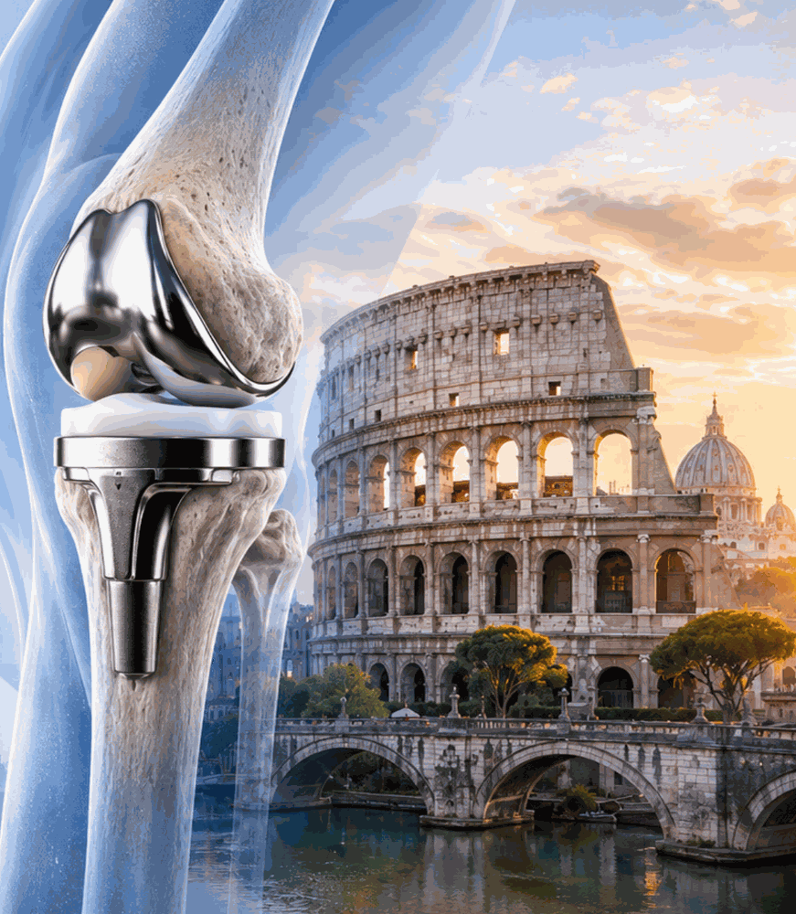

Revision Knee Arthroplasty and Periprosthetic Joint Infection
Current Concepts and Future Directions
Welcome and Introduction
A message from the chairs
Dear Colleagues,
It is our pleasure to welcome you to the ESSKA Arthroplasty & Degenerative Knee Focus Meeting, taking place at the NH Hotel Villa Carpegna in Rome, Italy, on 8–9 October 2027, dedicated to “Revision Knee Arthroplasty and Periprosthetic Joint Infection: Current Concepts and Future Directions.”
Revision knee arthroplasty brings together some of the most demanding decisions in orthopaedic practice. Understanding why a knee replacement has failed, choosing the right reconstructive strategy and managing infection require both sound scientific knowledge and practical surgical experience. With this meeting, we aim to create a setting where colleagues can explore these challenges together, exchange perspectives and translate current concepts into everyday clinical practice.
Our programme brings together a renowned international faculty to address the full revision pathway: from assessment and surgical planning to implant removal, fixation, bone defects, alignment and ligament balance. Dedicated sessions will explore osteotomy techniques and the diagnosis and treatment of periprosthetic joint infection, including complex and recurrent cases.
At the heart of the meeting is an emphasis on discussion. Concise expert presentations will lead into challenging clinical cases, interactive exchanges and practical take-home messages. We encourage you to question, contribute and share your own experience as we examine the decisions that shape each stage of revision surgery.
We are also planning re-live surgery sessions to bring participants closer to the operating theatre. Combining case presentations with step-by-step surgical recordings and moderated discussion, these sessions would offer a practical opportunity to examine surgical techniques and the reasoning behind them.
Whether you regularly undertake complex revisions or are developing your practice in this field, we invite you to join us for an engaging exchange of knowledge and experience. Alongside the scientific programme, the meeting will provide an opportunity to reconnect with colleagues and build new collaborations in the welcoming setting of Rome.
We look forward to welcoming you to Rome in October 2027.


The two days
What the meeting covers
Revision arthroplasty
Day one follows the aseptic pathway end to end: deciding when to revise, exposure and implant removal, alignment and the joint line, fixation and bone defects, then constraint and instability.
Periprosthetic joint infection
Day two is given over to infection: current diagnostic criteria and emerging biomarkers, low-grade and culture-negative cases, then one-stage against two-stage revision and recurrent PJI.
Current concepts and future directions
Integrated cases with faculty voting and take-home messages, a session on osteotomy techniques in revision, and planned re-live surgery pairing step-by-step recordings with moderated discussion.

Venue
NH Roma Villa Carpegna
A conference hotel just west of the historic centre, close to the Vatican, with twelve meeting rooms and 201 guest rooms, so the sessions, the exhibition and the delegate rooms all sit in one building.

Registration is open
Join us in Rome
Two lines on why to book early sit here: the number of places, what the fee includes, and whether previous meetings have sold out.
until the early rate closes on 00 Month 2027